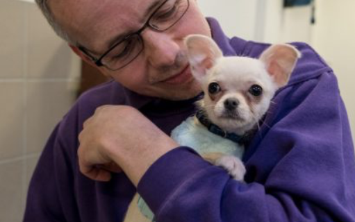
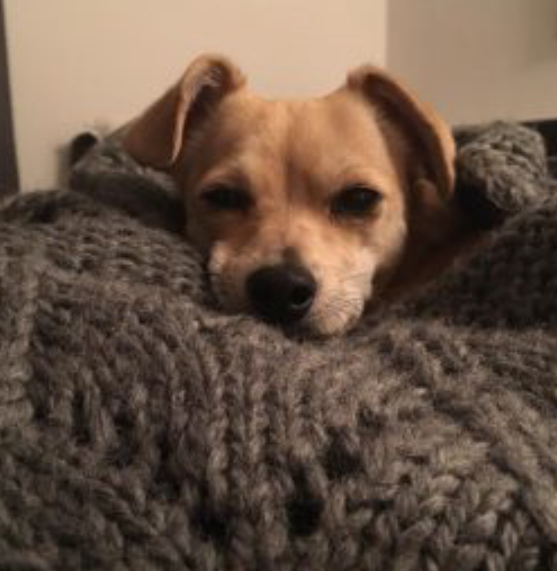
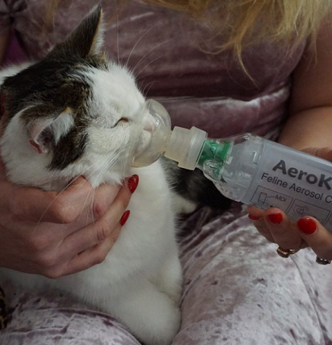
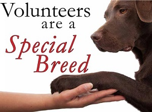

ACS
Annual Charity Show
Latest News of animal shelters

- Tiny Puppy found abandoned
- from Meyhew Pets
- A very small chihuahua was found abandoned in a safe house wrapped in a towel. The poor puppy was found shivering from the cold beneath a hedge in a park in North West London. The Mayhew Pets members found him and has taken him back to the shelter to be taken care of.

- Paw Pic Day
- From UK Animal Shelter
- The UK animal shelter has made a contest for taking photos of dogs and cats. The winner will be judged by the choosen staff member at the shelter. The winner will receive a personalised pet illustration by an artist. They are hoping to help the people care more about the animals and love them.

- Cat with feline asthma picked up
- From Kitty Catcuddlers
- A tiny little cat that is suffering from feline asthma has been picked up from the streets. The cat was found by the members of the Kitty Catcuddlers. They have taken good care of it and let it have some medical attention at the vet.

- Volunteering and Adoptation Improvement
- From Canine Helpers
- The Canine Helpers has been improving in getting the dogs adopted more. In the last year the adoptation progress has been going up. It's good to see that more people care for the animals. These animals want a nice warm home where they will be loved and taken cared of. Moreover, there are also more people volunteering to help at the shelter and find funds for it.